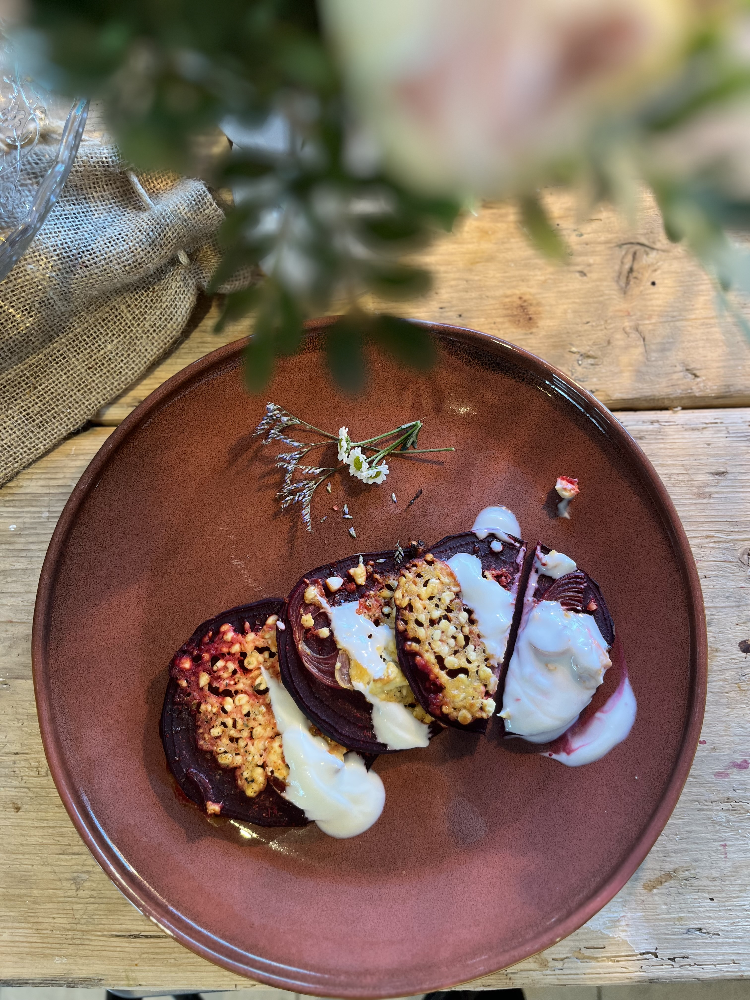

Glutenfrei, ohne Industriezucker. Ampel pro Rezept (Histamin, Darm, Zyklus). Mit Mehl-Alternativen und Reflux-Filter.
Zur TerraLuna AppWichtig: Alle Rezepte basieren auf meiner eigenen Erfahrung. Jeder Körper reagiert anders — teste vorsichtig, wenn du unsicher bist.